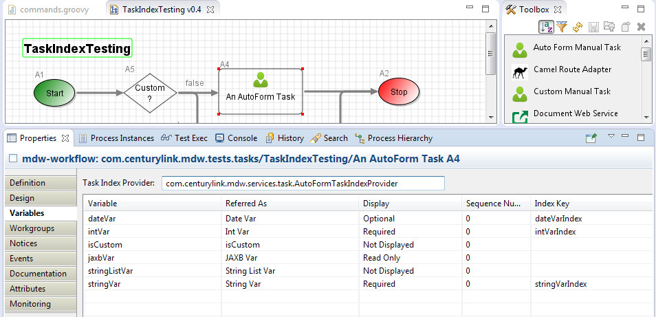
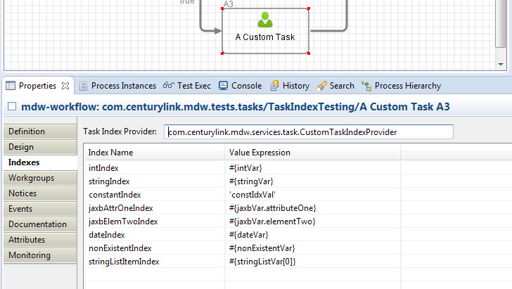

Task indexes are workflow runtime values captured from manual task processes at certain points in the task lifecycle (for example when a task is created or when it's completed). The main use of task indexes is to enable sorting, filtering and grouping by these values in the MDWHub My Tasks and Workload lists. When MDWHub users sort or filter across many tasks, this indexing mechanism provides much better performance vs. sort and filtering based on process variable values. Process variables perform fine for displaying at the task detail level in MDWHub, but aggregate functions benefit by using task indexes.
Task index values are generally derived from process variables. For AutoForm manual tasks, the Variables tab in Designer has a column for entering an Index Key that will automatically be populated with the associated variable:
For Custom manual Tasks, a Value Expression can be specified for each index:
The TaskIndexProvider interface provide an extensibility mechanism to support custom logic for setting index values based on the TaskRuntimeContext. In Designer a custom TaskIndexProvider implementation can be specified instead of the default behavior provided by MDW.